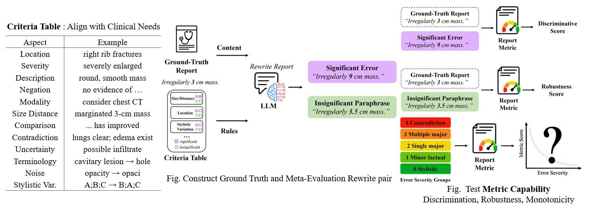

|
Ruochen Li I recently completed my M.Sc. in Computer Science at Technical University of Munich (GPA: 1.5/1.0, Distinction), and I am currently seeking PhD opportunities. My research focuses on Reliable Multimodal Learning: evaluation, post-training alignment, and interpretability of LLMs and VLMs. My work bridges language and vision: building clinician-validated benchmarks for radiology report evaluation, post-training LLMs (SFT/DPO + LoRA) for fine-grained clinical alignment, rethinking surgical planning evaluation for Video-LLMs, and analyzing attention mechanisms in long-context models. On the vision side, I have worked with MRI, CT, and CTA across segmentation, registration, and clinical outcome prediction. Going forward, I am interested in deeper multimodal fusion pre-training, data-efficient post-training under limited annotation, and building LLM/VLM-based agents for real-world applications. |
{kind=link}
ResearchI build systems and benchmarks that make multimodal models more reliable — especially in high-stakes medical settings where evaluation failures have real consequences. My current focus spans LLM-based metric design, post-training alignment, long-context interpretability, and medical image analysis across X-ray, MRI, CT, and CTA. Some papers are highlighted. |
|
 |
ReEvalMed: Rethinking Medical Report Evaluation by Aligning Metrics with Real-World Clinical Judgment
Ruochen Li*, Jun Li*, Bailiang Jian, Kun Yuan, Youxiang Zhu EMNLP 2025, Main Track paper A clinician-validated meta-evaluation benchmark for radiology report metrics, revealing clinical misinterpretations and score-inflating practices in widely-used metrics. |

|
Beyond Scalar Scores: Exploring LLM-based Metrics for Clinical Significance Evaluation in Radiology Reports
Qing Lu*, Ruochen Li*, ..., Dacheng Tao Under review, EMNLP 2026 Post-trained Qwen-8B and MedGemma-4B with SFT/DPO + LoRA, outperforming 32B medical LLMs on clinical alignment. Benchmarked LLM evaluators revealing discrimination bias and robustness failures. |

|
SurgGoal: Rethinking Surgical Planning Evaluation via Goal-Satisfiability
Ruochen Li*, Kun Yuan*, ..., Nassir Navab Under review, EMNLP 2026 arXiv Proposed a paradigm shift from sequence similarity to safety-critical goal-satisfiability for surgical planning evaluation; diagnosed Video-LLM perception failures. |

|
Focus Directions Make Your Language Models Pay More Attention to Relevant Contexts
Youxiang Zhu, Ruochen Li, Dacheng Wang, Daniel Haehn, Xiangyao Liang Under review, EMNLP 2026 arXiv Training-free focus directions in key/query activations steer LLM attention toward task-relevant context, mitigating distraction across multiple LLM families. |

|
Classification, Regression and Segmentation directly from k-Space in Cardiac MRI
Ruochen Li*, Jiazhen Pan*, ..., Daniel Rueckert MICCAI Workshop paper Vision Transformers applied to UK Biobank k-space using Masked Autoencoders, enabling robust prediction from undersampled, human-unreadable k-space data. |